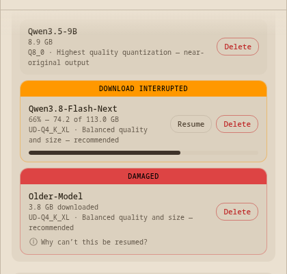
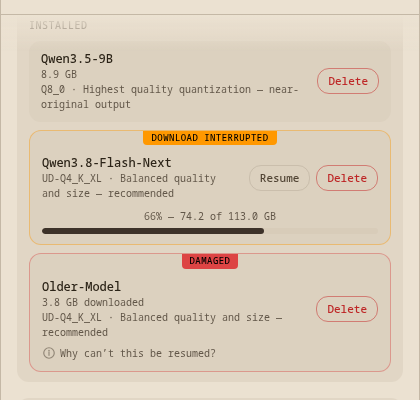
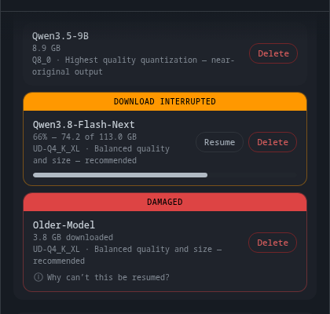
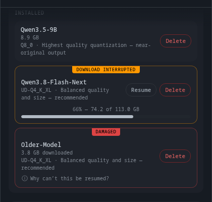
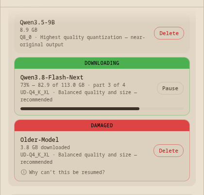
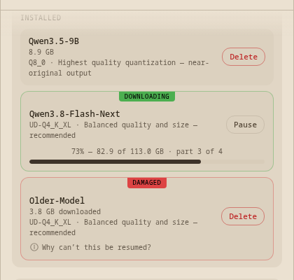
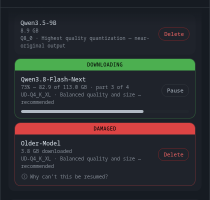
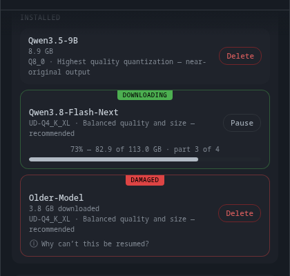

The state was a full-width solid bar across the top of the row — the loudest thing on the screen.
→ It is now a small centred tab hanging off the top edge, one type size smaller.




"73% — 82.9 of 113.0 GB · part 3 of 4" sat under the model name, three lines above the bar it was describing.
→ It now sits centred directly above the bar, so the number and the thing it measures are together.
Final two changes — then the design is settled — your answers
Space flips Before/After. Both of these are the changes you asked for on 2026-08-27; nothing else moved.
| Item | # | Point | Answer | Note |
|---|
Verification on this build
- All six local-model screens captured covered in all six themes, zero partials, first pass.
- Workbench boot check 12/12 against a server confirmed live.
- Types, lint and the invariant scan clean on the renderer.
What happens next
With this signed off, the design is final and the rest is machinery you will not see until it works: the record written beside each download so a crash can be recovered from, one honest list that never calls a half-finished model "installed", the disk-space check counting what is left rather than the whole download, and Resume actually resuming. I will come back when it runs against real files rather than fake ones.